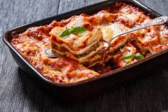

Lasagna Recipe

Description
Making perfect homemade lasagna doesn’t
have to be tedious. This top-rated easy
lasagna recipe comes together quickly with
a relatively short ingredient list.
Ingredients
- Ground beef and/or Italian sausage:These provide the meaty base for the lasagna.
- Onion, garlic:These are often sautéed to build the flavor base for the sauce.
- Crushed tomatoes, tomato paste, tomato sauce:These form the tomato-based component of the sauce
Steps
- Prepare the meat sauce (or bolognese): Brown ground meat (beef or a combination of beef and sausage) in a large skillet or Dutch oven with onions and garlic
- Make the cheese mixture: In a separate bowl, combine ricotta cheese, mozzarella cheese
- Cook the noodles (if not using no-boil): Boil lasagna noodles in a large pot of salted water until al dente (firm but cooked)